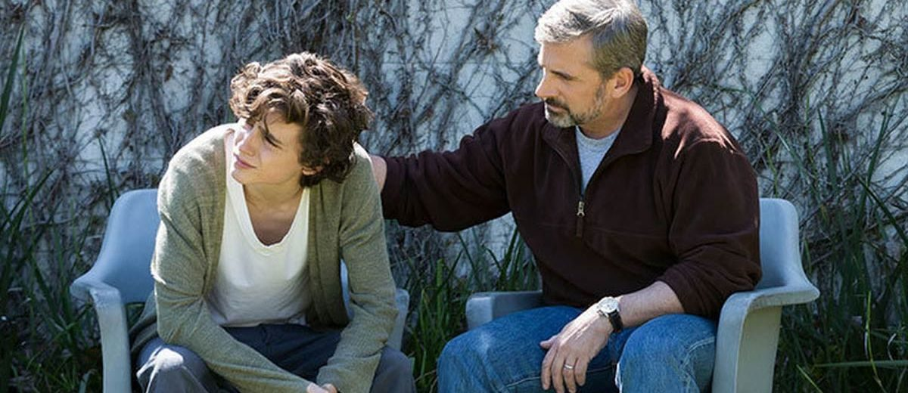

Entreprendre
Le quotidien d'une PME tech, sans filtre.
61 articles
Innovation & santé
Médecine, numérique et ce qui change vraiment.
120 articles
Internet & tech
Le web vu depuis 2007.
158 articles
Lectures
Les livres qui ont compté.
25 articles
Cinéma
Un top des films chaque année, depuis 2004.
197 articlesLes plus récents
Le top des films de l'année 2022?
Une année 2022 post-COVID (ou pas) avec quelques jolis sorties certes mais peu de gros "ouaw" de mon côté. Les "pas encore vus de 2022" Nope, The innocents, Decision to leave, Arma…
Lire l'article
Le top des films de (l'étrange année) 2020
Une étrange année cinéma 2020 avec peu de visites dans les salles (snif), beaucoup de streaming, et surtout beaucoup de kidsmovieeducation. Toutefois, voici un top, dans une année …
Lire l'article
Le top des films 2019 (ou presque)
Les goûts et les couleurs ... voici les miens pour 2019. Pour rappel: Top 2018, Top 2017, Top 2016, Top 2015, Top 2014, Top 2013, Top 2012, Top 2011, Top 2010, Top 2009, Top en 200…
Lire l'article
Le top des films 2018
Et voilà un petit top pour 2018. Pour rappel: Top 2017, Top 2016, Top 2015, Top 2014, Top 2013, Top 2012, Top 2011, Top 2010, Top 2009, Top en 2008, Top en 2007 , Top en 2004-2005-…
Lire l'articleLe top des films 2018 (à fin août)
Les "pas encore vus" The Florida project, La douleur, Revenge, Hostiles , Phantom Thread, Lady bird, Isle of dogs, The death of Stalin, En Guerre, Sicario: Day of the Soldado, Au p…
Lire l'articleLe top des films 2018 (à fin mars)
Les "pas encore vus" The Florida project, La douleur, Sparring, Burn out, Eva, Revenge, Hostiles, , Phantom Thread, Ladybird, Game Night, Ghostland, Le top 2018 (à fin février) I, …
Lire l'article